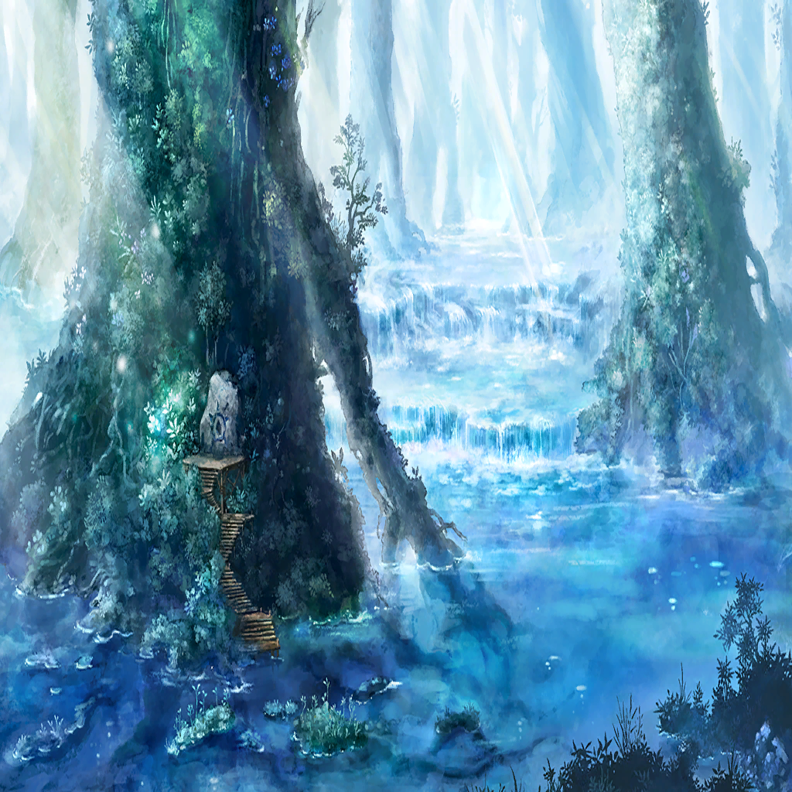

|
|  |
ネロ |
聞かせてくれ |
| ヴァーニル |
一言では言い表せん |
ネロ |
二言でも三言でも良い |
| ヴァーニル |
面白味のあるものじゃあない |
ネロ |
うぬから聞くから
面白いのだ |
| ヴァーニル |
… |
| ヴァーニル |
流域によって景色が異なるんだ |
| ヴァーニル |
下流、中流、上流、源流――
流れと共に変化していく |
| ヴァーニル |
水が絶えず流れていて
岸辺も少しずつと削られていく |
| ヴァーニル |
留まることなく、変わっていく |
ネロ |
…なんだ、それは |
ネロ |
川…言葉では知っていた
見たことはないが単なる景色だと思っていた
だが、改めて聞くと… |
ネロ |
少し…ワクワクだ |
| ヴァーニル |
…ふっ、ワクワクか？ |
ネロ |
胸が躍る未知の光景だ
うぬが語るものはすべて |
| ヴァーニル |
… |
| ヴァーニル |
だが…ロストブルーにあるのは
澱んだ水場か、暗渠（あんきょ）ぐらいだ |
ネロ |
あんきょ？ |
| ヴァーニル |
暗渠――
地下に埋設された排水路のことだな |
| ヴァーニル |
下水や用水が流れ込む
…地表に水面が見えぬ川だ
蓋をされた水路だ |
| ヴァーニル |
しかし
外界で川が流れている場所は
空も広く見られるんだ |
ネロ |
うぬらが望む、空まで… |
| ヴァーニル |
太陽に照らされる川面も
月が浮かぶ水面も |
| ヴァーニル |
青く映る |
ネロ |
………… |
| |
うぬの細めた目から
わずかに輝く瞳が見えた |
| ヴァーニル |
それを眺めながら時間を潰す |
| ヴァーニル |
まあ…最高に無駄で
大したことのない
やり残しだろ？ |
| |
出会った頃からそうだが |
| |
うぬは雄弁で
口が走り始めると
止まらず進む |
| ヴァーニル |
いつでもできると思いながら
いつまでもやれなかった
それだけなんだ |
|
| |
我は、うぬのように多弁ではなく
うぬよりも遥かに無知で
足を止めてばかりだ |
| |
だというのに |
| |
…このシンパシーは、なんだ？ |
 |
ネロ |
――――!? |
| ヴァーニル |
どうした？ |
ネロ |
…塔内に錬金術のアルケミィを感じる |
| ヴァーニル |
また力を求めてたどり着いた者が？ |
ネロ |
…強大な炎の力を感じる…
配置された幻影兵を焼き尽くし、
まっすぐ上を目指しているようだ |
| ヴァーニル |
…………錬金術、炎… |
ネロ |
ヴァーニル!? |
| ヴァーニル |
まだ早い…！ |
| ヴァーニル |
仮にここを聖教騎士団に
嗅ぎつけられたのであれば… |
| ヴァーニル |
聖教会へ
グリードダイクの抑えは
効いていないのか…？ |
| ヴァーニル |
ユヴェンが大陸に打って出るにあたり
力と仲間を集めている最中だ…
アイツらの結集に影響があっては―― |
| ？？？ |
ハアアアアアアアアアッ！ |
| ヴァーニル |
…………やはり |
| ？？？ |
その声………… |
| ヴァーニル |
焔竜王――カダノバ |

カダノバ |
…………屠竜者、ヴァーニル…!? |
| ヴァーニル |
ひとつ、尋ねたい |
| ヴァーニル |
異層塔ヴェーダになんの用だ
聖教騎士団第四騎士団団長？ |
カダノバ |
…争う気はない |
| ヴァーニル |
正義の味方はすぐにそう言う |
| ヴァーニル |
１．持ち前の正義感の暴走で
このスラムを一掃しに来た |
| ヴァーニル |
２．暗殺業を肩代わりしている
ロストブルーの民を抹殺しに来た |
| ヴァーニル |
３．俺に会いたくて来た
さあどれだ？ |
カダノバ |
…………しいて言えば、３だ |
| ヴァーニル |
ほう…？ |
| ヴァーニル |
ハグでもするか？ |
カダノバ |
互いに剣を納めてからならな |
| ヴァーニル |
そこまで無防備にはなれんよ |
カダノバ |
いいさ
睨み合ったままでも
対話はできる |
| ヴァーニル |
…そうだな |
ネロ |
我の寝床を焼くか、人間 |
カダノバ |
!? |
| ヴァーニル |
ネロ！ |
ネロ |
うぬのことは
ヴァーニルから聞いておる |
カダノバ |
この、乙女は…………!? |
ネロ |
誰が乙女か
ヴァーニル曰く、我は黒き竜… |
ネロ |
うぬが焔であつらえたという
幻の竜とは次元を異にする存在だ |
ネロ |
うぬはヴァーニルの敵
うぬら正義者はヴァーニルの夢の障害 |
| ヴァーニル |
ネロ、待て！ |
ネロ |
夜霧の如く、吹き飛べ |